Finans Portalı, bireysel yatırımcının dağınık biçimde takip etmek zorunda kaldığı tüm piyasaları, makro verileri ve kişisel portföyünü tek bir ekranda birleştiren modern bir web platformudur.
Bugün bir yatırımcı; hisse senedini bir uygulamadan, kripto parayı bir başkasından, döviz ve altını ayrı sitelerden, fon getirilerini bir başka platformdan, enflasyon ve faiz verilerini ise resmi kurum sayfalarından takip etmek zorundadır. Finans Portalı bu parçalı deneyimi sonlandırır: hisse, kripto, döviz, emtia, yatırım fonu, tahvil/bono ve vadeli işlemleri; enflasyon, faiz ve döviz kuru gibi makro göstergeleri; finans haberlerini ve kullanıcının kişisel portföyünü tek bir arayüzde sunar.
Platformun en güçlü yanı, veriyi yalnızca göstermekle kalmayıp anlamlandırmasıdır: yapay zeka destekli analiz, enflasyondan arındırılmış gerçek (reel) getiri hesabı ve risk/sinyal değerlendirmeleri sayesinde kullanıcı, "kazandım mı, gerçekten kazandım mı?" sorusuna net yanıt alır.
Sonuç: dağınık ekranlar ve manuel hesaplamalar yerine, bütünleşik, akıllı ve güvenli bir finansal karar destek platformu.
"Her bireysel yatırımcının cebinde, kurumsal kalitede bir finans masası."
Finans Portalı; güvenilir veriyi, akıllı analizi ve sade bir kullanıcı deneyimini bir araya getirerek yatırım kararlarını daha bilinçli, daha hızlı ve daha güvenli hale getirmeyi hedefler. Platform; uzmana da, ilk kez yatırım yapacak kişiye de aynı anda hitap edecek şekilde tasarlanmıştır.
Veriyi göstermek yeterli değildir; onu anlaşılır ve eyleme dönüştürülebilir kılmak gerekir. Reel getiri, risk göstergeleri ve yapay zeka yorumları tam da bunun için vardır.
Platform, tek bir kullanıcı tipine değil, finansla ilgilenen geniş bir kitleye hizmet eder.
| Profil | İhtiyaçları | Finans Portalı'nın sunduğu |
|---|---|---|
| Bireysel yatırımcı | Tüm portföyünü tek yerden görmek, fiyat takibi, performans analizi | Bütünleşik portföy, dağılım grafiği, kâr/zarar ve reel getiri |
| Yeni başlayan | Terimleri öğrenmek, düşük riskli seçenekler, rehberlik | Üzerine gelince açıklama veren terim sözlüğü, yapay zeka danışman, risk etiketleri |
| Aktif takipçi | BIST + ABD + kripto + emtiayı eş zamanlı izleme, alarmlar | Çok varlıklı canlı tablo, fiyat alarmları, takip listeleri |
| Uzun vadeli yatırımcı | Enflasyona karşı gerçek getiri, geçmiş performans, fon kıyası | Reel getiri motoru, geçmiş senaryo aracı, fon karşılaştırma |
Bu çeşitlilik, ürünün hem geniş bir kullanıcı tabanına ulaşma hem de farklı abonelik/segment stratejilerine uyum sağlama potansiyelini gösterir.
Finans Portalı, sade ve modern bir arayüzle aşağıdaki yetenekleri tek çatı altında toplar:
Hisse, kripto, döviz, emtia, yatırım fonu, tahvil/bono ve vadeli işlemler; aranabilir, sıralanabilir, filtrelenebilir tablolarla.
Enflasyon (Türkiye & ABD), faiz/mevduat oranları ve döviz kurları; sade grafiklerle.
Sohbet tabanlı yatırım danışmanı ve çapraz varlık analiz tablosu; risk ve sinyal değerlendirmeleri.
Enflasyondan arındırılmış gerçek getiri; "nominal mi, gerçek mi kazandım?" sorusuna net yanıt.
Pozisyon ekleme, alım/satım takibi, dağılım grafiği, Excel ile toplu içe aktarma.
Çok sayıda kaynaktan finans haberleri; Türkçe/İngilizce ve otomatik çeviri.
Hedef fiyat alarmları; uygulama içi ve e-posta bildirimleri.
Açık/koyu tema, dil seçimi, para birimi gösterimi (Orijinal / TL / USD), takip listeleri.
Tüm bunlar masaüstü ve mobil ekranlara uyumlu, hızlı ve akıcı bir deneyim olarak sunulur.
Her bölüm, kullanıcının somut bir ihtiyacını karşılayacak şekilde tasarlanmıştır.
Kullanıcı giriş yaptığı anda piyasanın genel görünümünü görür: günün en çok hareket eden varlıkları, BIST'in en aktif hisseleri (yükselenler/düşenler/hacim), güncel döviz şeridi ve son finans haberleri. Hızlı erişim kartlarıyla istediği bölüme tek tıkla geçer.
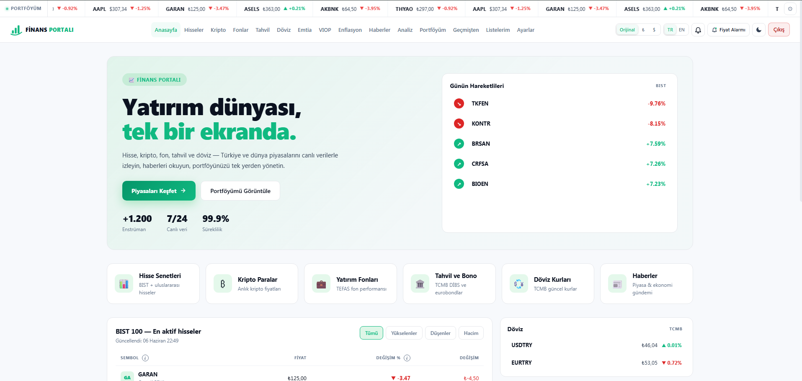
BIST ve ABD hisseleri, başlıca kripto paralar, altın/gümüş/petrol gibi emtialar; aranabilir ve sıralanabilir tablolarda sunulur. Her satırda küçük bir eğilim grafiği yer alır; bir satıra tıklamak detaylı fiyat grafiğini açar. Kullanıcı para birimini Orijinal, TL veya USD olarak görüntülemeyi seçebilir.
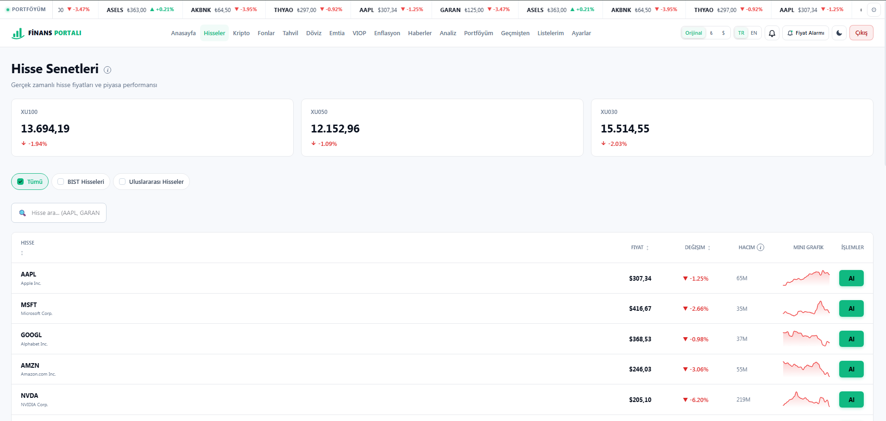
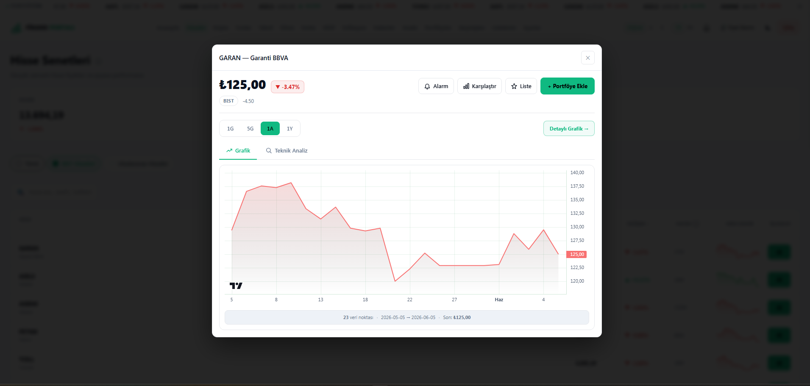
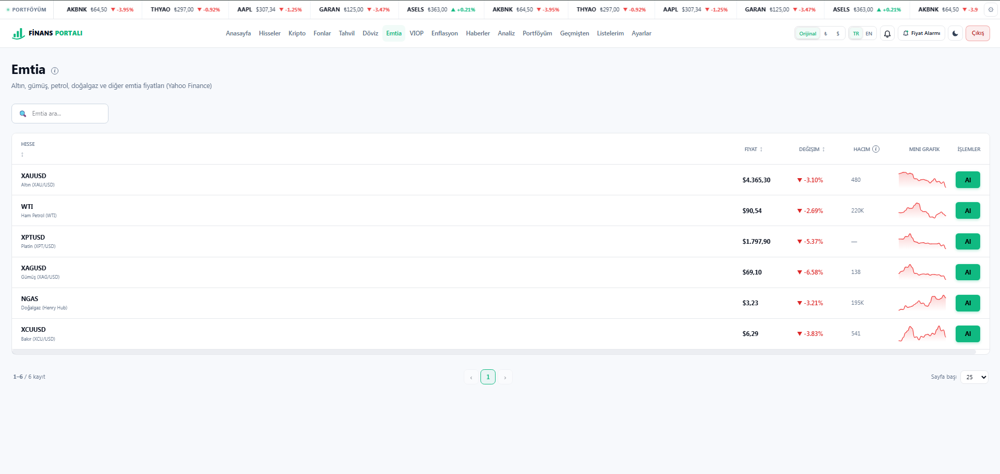
Yüzlerce Türk yatırım fonu; birim fiyatları, günlük/aylık/yıllık/3 yıllık/5 yıllık getirileri ve risk düzeyleriyle listelenir. Yatırımcı, fonları getiriye veya riske göre sıralayıp kolayca karşılaştırır.
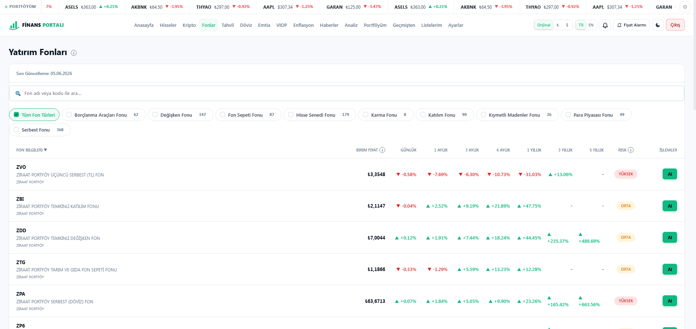
Devlet tahvili, hazine bonosu gibi borçlanma araçları; vade, kupon, fiyat ve getiri bilgileriyle sunulur. Banka mevduat faizleri ayrı bir kartta yer alır. Her enstrümanın getiri geçmişi grafiği ile zaman içindeki seyir izlenebilir.
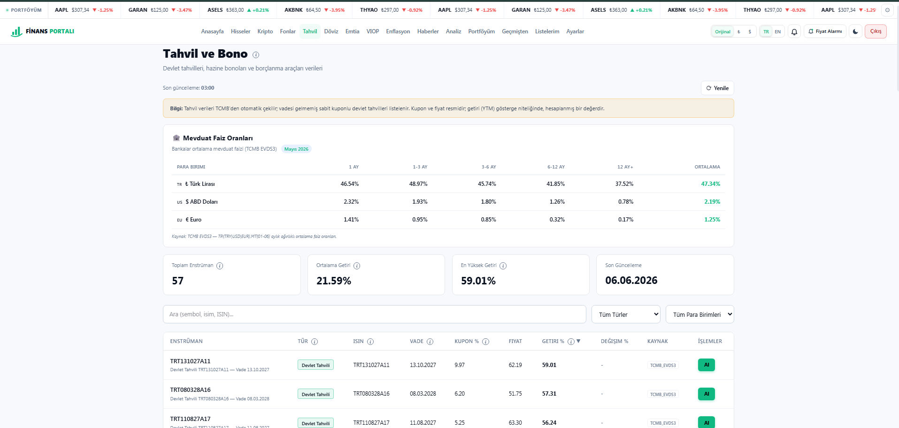
Resmi döviz kurları (alış/satış/efektif) tablosu ve anlık bir kur çevirici ile günlük döviz ihtiyaçları tek ekranda karşılanır.
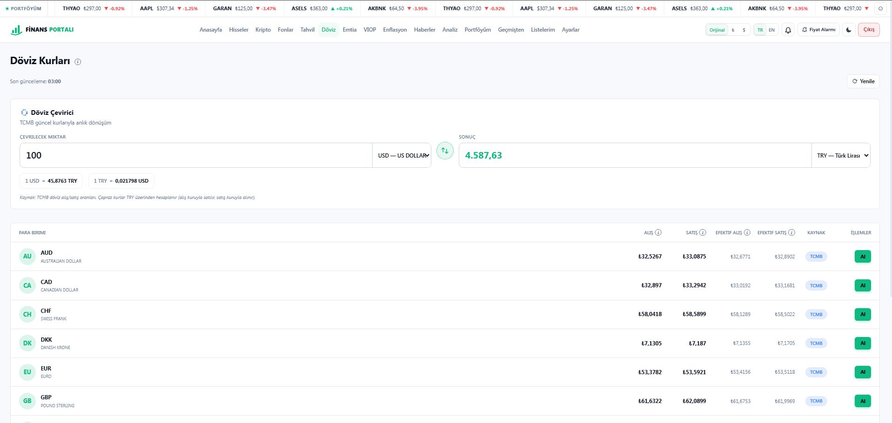
Borsa İstanbul vadeli işlem kontratları; dayanak, vade, son fiyat ve hacim bilgileriyle filtrelenebilir tablolarda gösterilir.
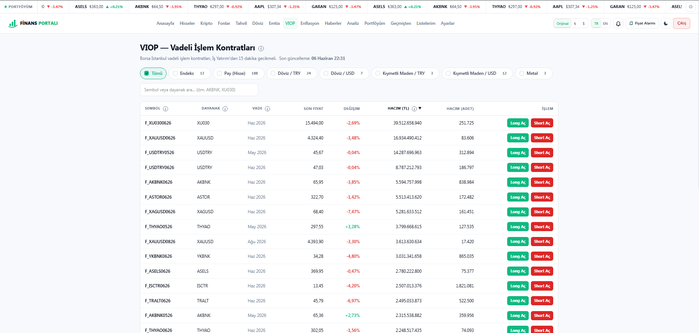
Türkiye ve ABD enflasyonu; aylık ve yıllık grafiklerle, 5 yıllık birikimli bakışla sunulur. Platformun ayırt edici özelliği burada öne çıkar: yatırım getirileri enflasyondan arındırılarak hesaplanır; böylece kullanıcı paranın alım gücü açısından gerçekte kazanıp kazanmadığını görür.
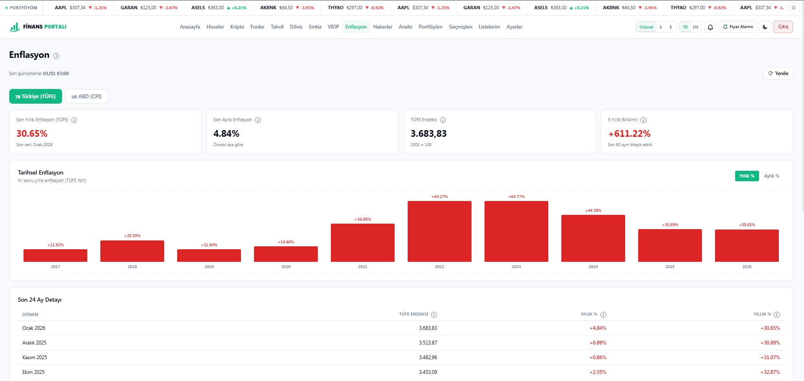
Çok sayıda güvenilir kaynaktan derlenen finans haberleri kategorilere ayrılır (ekonomi, hisse, döviz, kripto, emtia vb.). İngilizce haberler kullanıcının diline otomatik çevrilir; her haberin detay sayfası ve kaynak bağlantısı vardır.
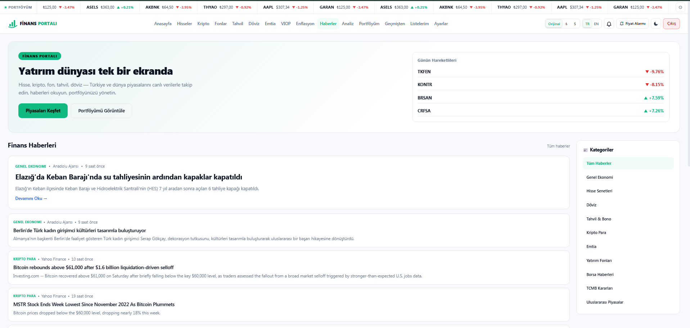
İki bölümden oluşur. Solda çapraz varlık analiz tablosu: tüm varlıklar; günlük/haftalık/aylık/yıllık değişim, reel yıllık getiri, risk düzeyi ve kısa/uzun vadeli sinyallerle bir arada. "Enflasyonu yenenler" filtresiyle yalnızca gerçek getirisi pozitif olanlar listelenebilir.
Sağda yapay zeka destekli sohbet danışmanı: kullanıcı doğal dille soru sorar ("5.000 TL'yi nasıl değerlendiririm?", "Altın bu ay nasıl?"). Danışman; güvenli/dengeli/riskli senaryolar veya güncel veriyle desteklenmiş yorumlar üretir.
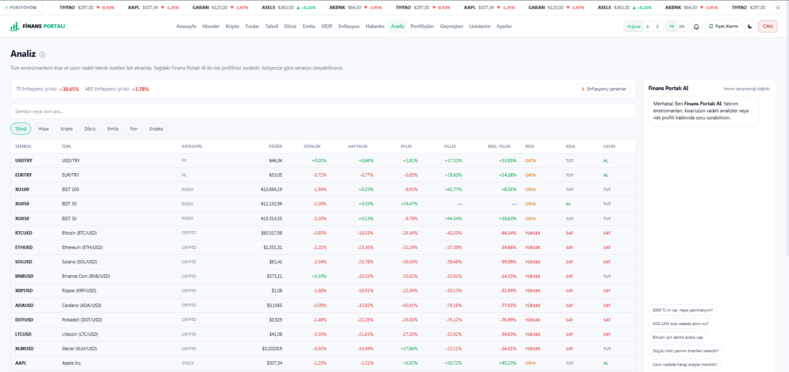
Danışman asla "kesin kazanç" vaadi vermez, doğrudan "al/sat" emri kurmaz ve yalnızca finans/yatırım konularında yanıt verir. Her yanıtın sonunda "yatırım tavsiyesi değildir" uyarısı yer alır. Bu yaklaşım hem kullanıcıyı korur hem de yasal/etik açıdan güven oluşturur.
Kullanıcı kendi pozisyonlarını ekler; toplam değer, toplam kâr/zarar ve varlık dağılımını (interaktif halka grafik) görür. Alım/satım kaydı tutulur, ortalama maliyet otomatik güncellenir. Pozisyonlar Excel dosyasıyla toplu olarak içe aktarılabilir. Listedeki bir varlığa tıklayınca fiyat grafiği açılır.
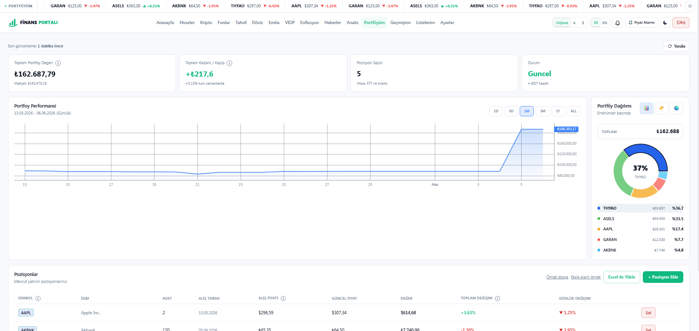
"X tarihinde Y almış olsaydım bugün ne olurdu?" sorusuna yanıt verir. Kullanıcı geçmiş bir alım girer; platform bugünkü değeri, kâr/zararı ve enflasyona göre reel getiriyi hesaplar. Eğitim ve karar destek için güçlü bir araçtır.
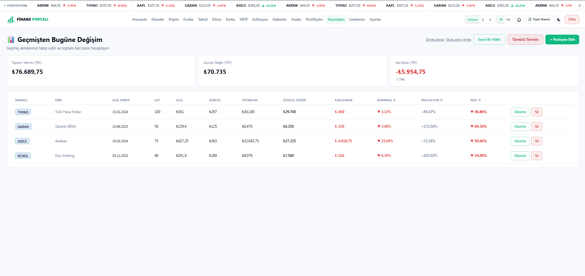
Kullanıcı kişisel takip listeleri oluşturur; hedef fiyat alarmları kurar (uygulama içi + e-posta bildirimi). Ayarlardan profilini, bildirim tercihlerini, dilini, temasını ve para birimi gösterimini yönetir; profil fotoğrafı ekleyebilir.
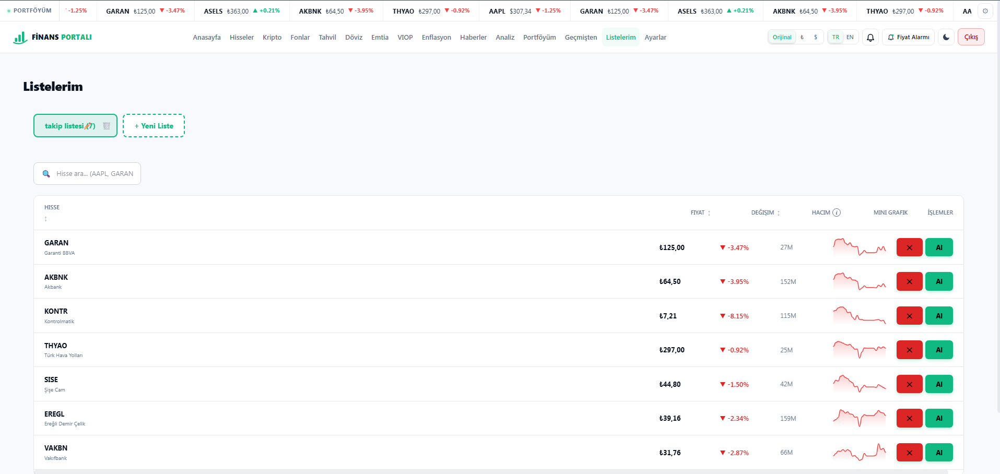
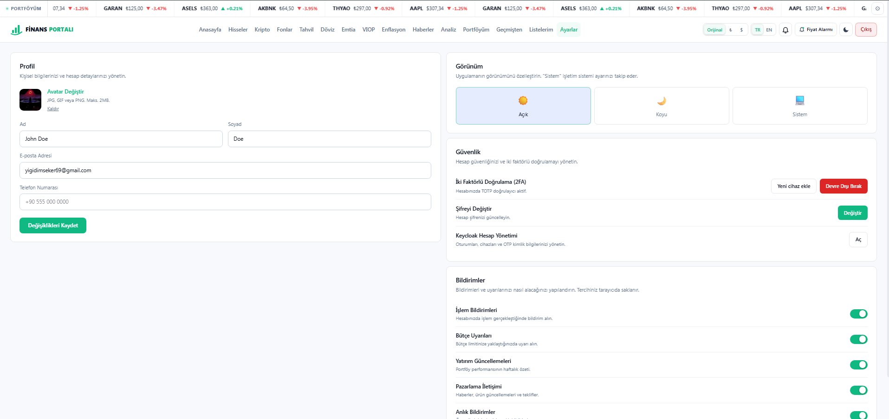
8'den fazla varlık sınıfı + makro veri + haber + portföy; rakiplerin ayrı ayrı sunduğunu birleştirir.
Enflasyondan arındırılmış gerçek getiri — pazarda nadir bulunan, yatırımcıya doğruyu gösteren bir özellik.
Veriyi yorumlayan, senaryo üreten, sorumlu ve güvenli bir asistan.
Türkçe/İngilizce arayüz ve global haberlerin anında çevirisi.
Terim sözlüğü, risk etiketleri ve rehber niteliğinde yapay zeka.
İki adımlı doğrulama ve kurumsal kimlik altyapısıyla yüksek güvenlik.
Pazardaki ürünler genellikle ya geniş kapsamlı ya da akıllıdır. Finans Portalı, geniş kapsam + akıllı yorumlama + güçlü güvenlik üçlüsünü tek üründe bir araya getirir.
Finansal bir üründe güven her şeyden önce gelir. Finans Portalı bunu hem teknik hem de deneyim düzeyinde önceliklendirir.
"Verim güvende, hesabım korumalı, gördüğüm rakamlar güvenilir kaynaklardan geliyor ve aldığım yorum beni yanıltmıyor."
Ayşe ilk kez yatırım yapacak. Terimleri bilmiyor. Anasayfada piyasayı görüyor, anlamadığı kavramların üzerine gelince kısa açıklamalar okuyor. Yapay zeka danışmana "10.000 TL'yi düşük riskle nasıl değerlendiririm?" diye soruyor ve güvenli/dengeli/riskli üç senaryo alıyor. Risk etiketleri sayesinde temkinli seçimler yapıyor.
Mert; BIST, ABD hisseleri ve kriptoyu aynı anda izliyor. Takip listeleri oluşturuyor, kritik hisseler için hedef fiyat alarmları kuruyor. Fiyat eşiğe gelince e-posta ve uygulama bildirimi alıyor; tek ekranı terk etmeden tüm piyasaları yönetiyor.
Selin portföyünün "gerçekte" kazanıp kazanmadığını merak ediyor. Reel getiri sayesinde nominal %38 getirisinin, %45 enflasyon karşısında aslında alım gücü kaybı olduğunu görüyor. "Geçmişten" aracıyla farklı tarihlerdeki alım senaryolarını test ediyor, fonları karşılaştırıyor ve daha bilinçli karar veriyor.
Can global piyasaları takip ediyor ama İngilizce haberlerle uğraşmak istemiyor. Haberler bölümünde global başlıkları Türkçe okuyor, kategorilere göre filtreliyor ve gündemi hızla yakalıyor.
| Kullanıcının sorunu | Finans Portalı çözümü |
|---|---|
| "Her varlık için ayrı uygulama kullanıyorum." | Tüm varlıklar ve makro veriler tek ekranda. |
| "Getirim yüksek görünüyor ama gerçek mi?" | Enflasyona göre reel getiri otomatik hesaplanır. |
| "Veriyi anlamlandıramıyorum." | Yapay zeka danışman + risk/sinyal değerlendirmeleri. |
| "Finans terimleri kafa karıştırıyor." | Üzerine gelince açıklayan terim sözlüğü. |
| "Global haberler İngilizce." | Otomatik Türkçe çeviri. |
| "Hesabımın güvenliğinden emin değilim." | İki adımlı doğrulama + kurumsal kimlik altyapısı. |
Finans Portalı; kapsam, akıl ve güveni tek üründe birleştirerek bireysel yatırımcının dijital finans masası olmayı hedefler.
Platform çalışır ve uçtan uca işleyen bir üründür. Aşağıdaki yetenekler tamamlanmış ve kullanılabilir durumdadır:
Ürün, demo edilebilir ve gerçek kullanıcıya sunulabilir olgunluktadır.
Mevcut sağlam temel, aşağıdaki yönlerde büyümeye açıktır:
Web deneyiminin yanına yerel mobil uygulama.
Gelişmiş analiz, daha fazla alarm ve özel raporlar için ücretli paketler.
Profesyonel veri sağlayıcılarla saniyelik güncelleme.
Takipten işleme: aracı kurum bağlantısıyla doğrudan emir (opsiyonel).
Haftalık/aylık portföy ve piyasa özetlerinin e-posta ile sunumu.
Fikir paylaşımı, model portföyler ve takip özellikleri.
Ürün, odağını korumak için bazı alanları bilinçli olarak kapsam dışında tutar:
Finans Portalı; net odağı, güçlü kapsamı ve akıllı analiz yetenekleriyle bireysel yatırımcının güvenilir dijital finans platformu olmaya hazır bir üründür.
— Belge sonu —